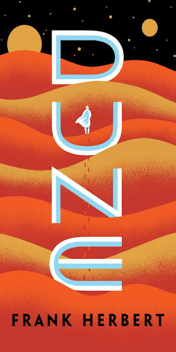
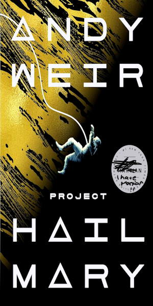
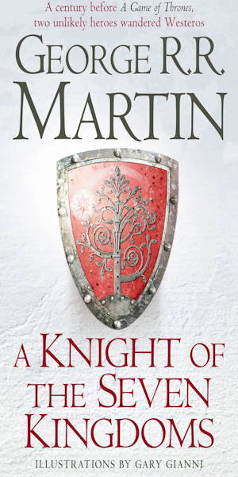
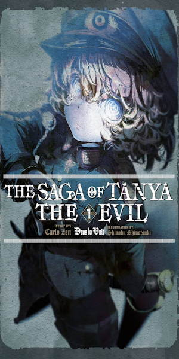
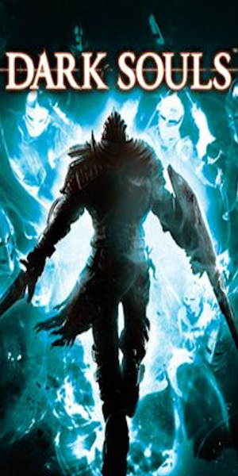
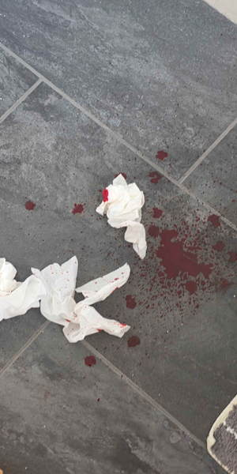
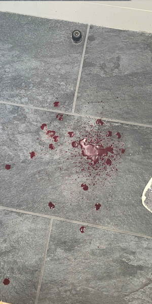

I mainly go by kinuh, but at times I like to be called Fraesee (its pronounce three-see)
"kinuh" is ALWAYS full lowercase!!! "Fraesee" is either lowercase or uppercase "F"
Hello my names kinuh........... I've always wanted a website so I decided why not just do it and not be a lazy BUM some common questions below if you have anymore scroll to the bottom
Q&A
⁃ hobbies? what do you like? o.O
I got some hobbies: gaming*, art, music**, reading, occasionally worldbuilding/writing, game dev stuff
i also eat glue
*personally, I only somewhat consider gaming a hobby, like 16 hours a day on runescape is kinda not a hobby is it jamie
**only listening... does that count? I dont know...




YOUJO SENKI IS SOO GOOD. im not a war guy but i love it fav LN hate the anime
⁃ favourite game??? ;d
dark souls 1. I love the interconnected world (mainly at firelink shrine) and I think anor londo is the best area fromsoftware has ever done.
now obviously im sorta a newgen, my first soulsborne game was elden ring lol, but I felt that I enjoyed the "lore" (hate calling it that lowk)
far more than I did for elden ring or other soulsborne games. learning about the first flame and the age of fire really made my mind wander a
little and led me to fill in the gaps with my ideas, not from a youtube video (not bashing anyone who did)
dark souls 1 also inspired
fallow!
a short story I submitted for my schools 1000 word thingy.
I didn't win (they chose like 20 winners) and I think that the reason was because they thought it was ai generated :(
I just read a lot!! em dashes aren't rare at alllllllll UGHHhh.h.h...
not to be too critical but the pacing is wack in that thing, 1000 is NOT enough words (it also sucks, im way better now)

⁃ favourite band? ( ͡• _•)
At the moment it has to be glass beach and you are an angel (yaaa is j's solo band since glass beach disbanded), I have known them for soooo long because of bedroom community, but I never really gave them a listen until recently and I fell in love. My fav glass beach song is commatose followed by the CIA, and the yaaa its kate said at the moment (but the song you are an angel is really good as well!!!)
these are clickable⁃ fun fact(s)? or you too private????? huh?!!
i get nosebleeds a lot. like 1 per week
i like anime
and im 5"7 (172cm) at 18 (its over)
(also i hate this btw, when you google 172cm in feet, it says 5.643 feet THAT IS NOT 5 FOOT 6. ITS 5.64 FEET WITHOUT INCHES. THATS 5 FOOT AND 7.7 INCHES)
can i round up to 5 foot 8 btw?
TRIGGER WARNING BLOOD ON IMAGES BELOW


bad nosebleed in the bathroom, was feeling lightheaded after :(
awesome blur affect though got it online
⁃
idk what other question you might have so dm me on discord and ill add it
its on my socials section
this is so you can scroll and see the text